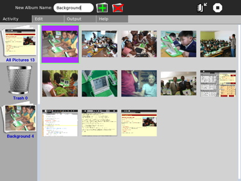
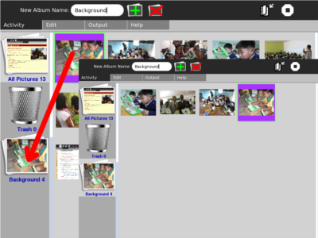
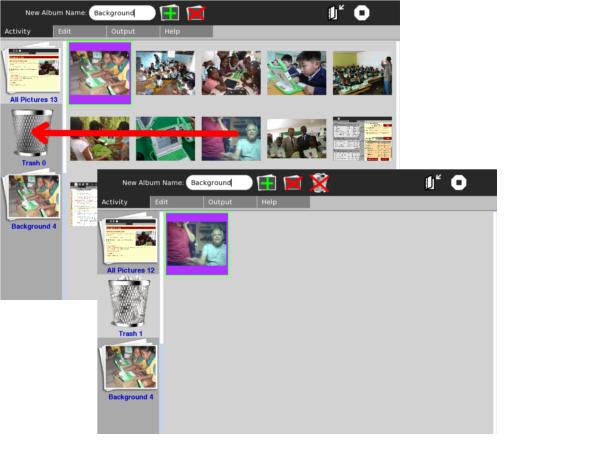

The first time XoPhoto starts up, it needs to look though the Journal to find all the pictures, and generate the small thumbnail images it uses. This may take a lot of time, particularly if there are a large number of pictures found there. As it is creating the thumbnails, they will become visible on the screen. The next time XoPhoto starts up, it will proceed much more quickly.
Note that for all of the icons at the top of the screen, moving the cursor to an icon will give a very short description of the function of that selection.
Initially there will be only two items visible on the left. The top one is labeled "All Pictures" and shows the number of pictures found in the Journal. The second is labeled "Trash 0". As you are working with the pictures in "All Pictures", there may be images which you want to discard. You can drag them to the "Trash" by left clicking on the undesired image, holding the left button down as you move the cursor over the image of the trash, and releasing the left button.
On the XO this usually takes two hands, one to control the left button, and the other to move the cursor. An alternative, and easier method is to click the right button on the undesired image, move the cursor to the trash, and then click the right button again.

At any time, the user can start a new stack by clicking the icon with the green plus sign. The default name is "New Stack". It can be renamed by typing the new name in the field labeled "New Album Name".
In a similar fashion, a stack can be deleted by clicking the "stack" icon with the red X overlayed upon it. For deleting a stack, you must confirm your intention before the stack will be deleted.
As a special case, if there are no Stacks in the left column (only "All Pictures" and the "Trash"), a "New Stack" will be created if the user double clicks on an image in the "All Pictures" set of images. Thereafter, double clicking will add the "double clicked image" to the most recently used stack.
The order of the images in a stack can be changed by the drag and drop method mentioned above. Left click on the item to be moved, and hold it down while dragging the image to the new location.
 Images can be removed from the stack by dragging them to the trash. When items from stacks you have created are dragged to the trash, they just disappear. They are not added to the contents of the trash. Only the images that are dragged from "All Pictures" are added to the contents of the trash basket. (Notice that in the multiple image to the right, the contents of the Trash are displayed--the trash basket is the same shade of gray as the right side). When you have selected the Trash, the contents of the Trash Basket are visible, and the "Empty Trash" icon becomes visible (the red X over the Trash image). When "Trash" is emptied, all corresponding pictures are removed from the XO and are not recoverable.
Certain editing operations affect all views: adding Title, Description, and rotating the image.
The XO itself is the most convenient means of adding photos to XoPhoto. The camera adds images to the Journal automatically whenever the Record Activity is used to take pictures. It is more convenient to use the XO as a camera, if the "O" button (one of the four grouped together in diamond shape on the right side of the XO screen) is used as the camera trigger.
Another way of using the XO as a source is to take a screenshot of what is currently on the XO display. This is done via the <alt "1"> key conbination.
Images can be imported by selecting the "Edit" tab on the menu, and then clicking on the top leftmost icon. USB sticks, and SD cards will become visible and can be selected as import sources. The dialogue box will permit the user to select a folder from which all the images will be imported into the XO Journal. Then the next time the XoPhoto program is started up, the new photos in the Journal will be noticed, and the thumbnails will be generated.
A stack of images can be exported to a folder from the Journal by choosing the "Output" tab of the top menu. The current version of XoPhoto exports the image as it was received from the source--without rotation, or other transformations. This may change in later versions, as soon as quality and preservation of embedded information issues can be resolved. The exported images will be output in the order of the stack, and with filenames modified to the title given to the image on the "Edit" menu tab. The filenames begin with a sequence number so that other slideshow programs will show them in the correct order.
The location of the folder can be selected using the dialog box which pops up initally. A folder will be generated with the name you entered when you named the photo stack. If a folder with that name already exists, a "-1" or "-2", etc, will be added to the folder name.
At any time during the viewing of the thumbnails, if the user desires to view a larger view of the image, the "Output" tab "next slide" icon can be selected. This will show the currently selected image at the largest size possible. "Next slide" and "Previous slide" will continue to display large images. The square "Stop" icon will return the user to the thumbnail screen.
There is a procedure required to prepare the /home/olpc/Pictures directory to receive pictures from XoPhoto. This procedure will set the permissions on the "Pictures" directory so that XoPhoto can write. The procedure is a 4 step process:
Thereafter, whenever you export a stack of pictures, by default they will be placed in the "/home/olpc/Pictures" folder, and they will be available from to the Browse Activity for upload .
See what bugs have already been reported at: SugarLabs Trac
You can see the history, and links to the resources related to XoPhoto at the OLPC wiki
Leave comments, read archived blog posts about XoPhoto at XoPhoto.wordpress.com
You can help make XoPhoto better by reporting the Bugs, and suggestions you have for improvement.
Please send email with "XoPhoto Bug" in the title to "georgejhunt@gmail.com" describing the problem, and the software Build number from "My Settings" -- "About My Computer" (described in next paragraph). I will enter your bug into the tracking system, and work to address the bugs in priority order.
The author of XoPhoto will make every effort to provide quick turnaround on fixes, and ensure that the software update activity function provides a convenient means of obtaining the improved activity (From the circle home screen, right click on the XO figure in the center, left click on "My Settings", left click on "softare update" -- on a recent build you need to use the horizontal scroll bar to make "software Update" visible).